Postmodernism contains two constitutively essential and distinguishing tendencies of design: deconstruction and refinement. Essential in the sense that, without these aspects, postmodern design would not have developed in the specific way that it did. Deconstruction can be understood as the act of taking something apart, stripping it to the constituent elements and relations through which it coheres as a recognizable object. It analytically separates the formal, functional, symbolic, and cultural relations through which the object is made legible (Derrida, 1967/2016). This does not only mean physically dismantling the object, something more akin to disassembly or decomposition. Rather, it encompasses exposing the tensions, dependencies, and latent possibilities within its existing structure (Johnson & Wigley, 1988). An existing object is separated into the visible and conceptual elements through which it is seen and recognized (multiple visibles) (Azuma, 2001/2009). These may include formal qualities such as structure, surface, pattern, and material, or less tangible qualities such as symbolism, cultural associations, social meanings, and the gathering of these relations (Heidegger, 1950/1971). Refinement is a prolonged, staged process through which selected qualities are isolated, clarified, concentrated, intensified, and adjusted toward a finished or idealized condition. A basic description of this process follows: the essential qualities of an object are isolated and separated from one another to some degree; a new object is then progressively smoothed out and developed according to the logic of its existing, that is to say modern, form in order to produce something novel. This process of refinement, when combined with deconstruction and semiotic recombination, can be called ‘complex reduction’. Postmodernism can therefore be understood as a constitutive reversal of modernization (Venturi, 1966). However, postmodernism does not restore what modernism removed. This reversal operates like a Möbius strip: it changes direction while acting upon the structural logic of modernism’s maxims (Museum of Modern Art, 2004), axioms (Le Corbusier, 1923/2007), abstraction, reduction of form, geometry, and industrial production (Gropius, 1919/1974; Rams, 1995) to advance modernism toward a novel, exaggerated, or completed form. Instead of driving toward ‘purity of form’, allowing functionality to guide the shape of the object, or returning to premodern decorative techniques, postmodernism’s reversal turns inward. It takes modernism as its foundational base and moves along its existing logic toward a new endpoint. Postmodern design largely (although not totally) distinguished itself from modernism by combining deconstruction, refinement, and semiotic recombination into a process of complex reduction. Beginning from modernism’s premises, complex reduction separates, develops, and recombines the constitutive elements of an artwork, object, or building to produce something new: the postmodern original.
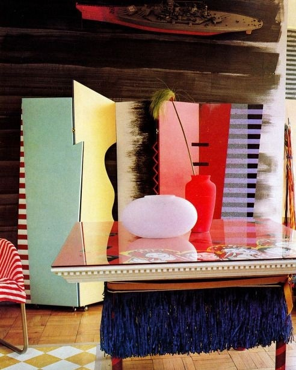
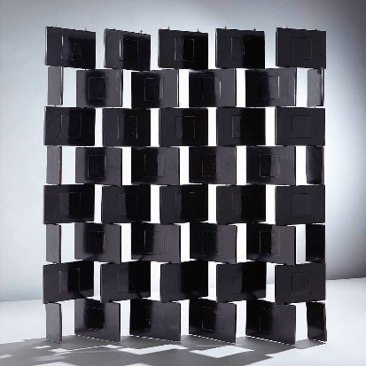
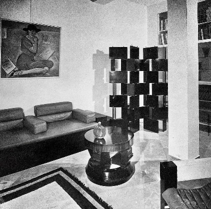
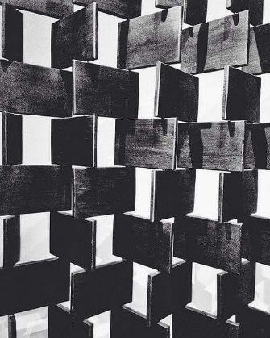

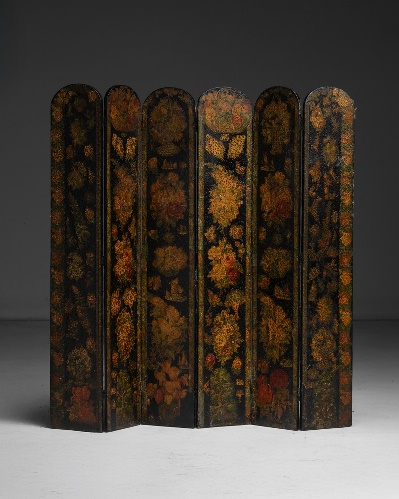
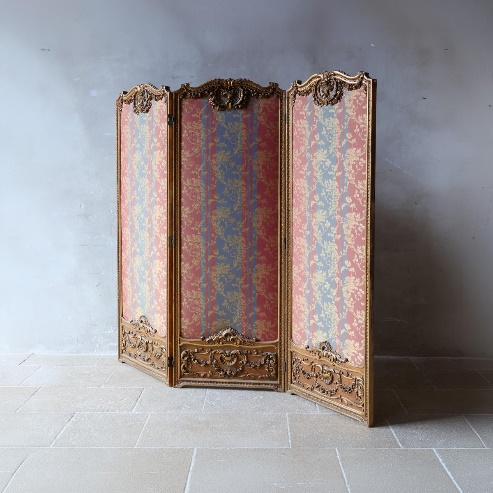
The Basic Movement of Postmodernism
Modernism reduced the number of independently legible elements in an object, structure, or dwelling by subordinating them to a unified structural and functional order (Gropius, 1937; Johnson & Wigley, 1988; Loos, 1908/1998; Moholy-Nagy, 1928/1947). This produced a kind of flattening effect upon the object, an effect routinely derided over the years in popular and public-facing criticism (Blake, 1961; Gordon, 1953; MacCarthy, 2019; Mumford, 1947; Skallas, 2023; Wolfe, 1981).

Modernism’s break with the existing order of design was acutely recognizable and plainly observable to the general public because it radically transformed the shape of ordinary objects from cutlery to office buildings and was reflected in mass cultural products, from film to popular music (Arne Jacobsen Design, n.d.; Museum of Modern Art, n.d.; Seeger, 1963; Tati, 1958, 1967). Postmodernism often “reversed” this general process by making surfaces, volumes, references, materials, and geometric components independently legible again as theoretical and material vertices.
The basic movement describing this tendency within postmodernism is as follows:
Postmodernism increased the complexity of form while retaining the language of modernism rather than retrieving premodern styles, except through quotation or idiomatic expression (Jencks, 1991; Venturi, 1966/2019). Quotation reintroduces historical forms as self-conscious referents, while idiomatic expression retrieves the spatial, typological, or cultural relations of classicism without necessarily reproducing their original appearance.
Michael Graves’s use of quotation took the form of reintroducing classical organization, columns, colour, and Greco-Roman motifs as exaggerated signs (Jencks, 1991; Nichols et al., 1990). Graves’s quotation took on a particularly postmodern sensibility when applied to the utopian environment of Disneyland (Baudrillard, 1986/2010; Nichols et al., 1990).
Disneyland’s heterotopia consists of disparate, yet somewhat interrelated classical elements of Greco-Roman and Ancient Egyptian architecture juxtaposed with wholly fictional accounts of both existing American landscapes like the Wild West and imagined futures (Foucault, 1967/1986; Nichols et al., 1990).
Meanwhile, the Getty Villa, designed by Robert Langdon and Ernest Wilson, reorients itself around a similar organization of classical references, quotations, and techniques initially resembling a typical Pompeian villa1 before later extensions by Rodolfo Machado and Jorge Silvetti introduced the idea of an excavation site (True & Silvetti, 2006). The Getty Villa utilized classical quotation in a distinctly postmodern way to reconfigure archaeological sites within an institutional museum context, therefore combining the process of excavation with the presentation of artefacts (Baudrillard, 1986/2010; True & Silvetti, 2006).


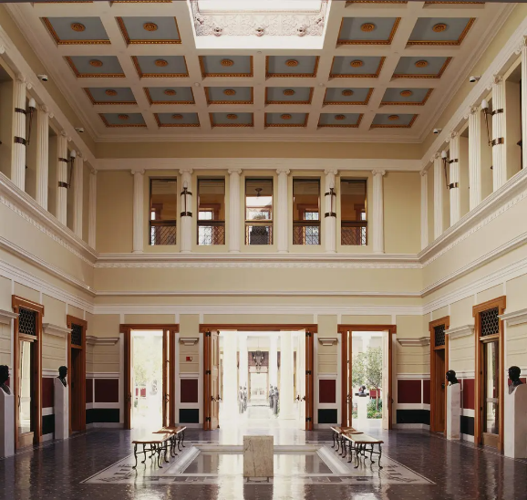
These anachronisms and imaginations were then presented and organized as entertainment—overtly in the case of Disneyland and discreetly in the case of the Getty Villa (Baudrillard, 1986/2010). Graves’s work with Disney took these classical quotations as signs of memory, fantasy, pleasure, and authenticity (theoretical and material vertices of real and imagined objects) (Baudrillard, 1981/1994, 1986/2010; Nichols et al., 1990). The Getty Villa induces a similar effect through reconstruction and institutional display, creating a spectacle for both educational and cultural consumption (Baudrillard, 1986/2010; True & Silvetti, 2006). Taken together, these architectural anachronisms demonstrate how postmodernism refracts, multiplies, and distorts meaning even through quotation (Baudrillard, 1981/1994; Jencks, 1991). The historical references are rendered unstable, reducing their original specificity, form, and depth while creating a layered, more complex field of meaning that signifies antiquity, authenticity, artificiality, fantasy, institutional authority, entertainment, memory, and simulation (Baudrillard, 1981/1994, 1986/2010).
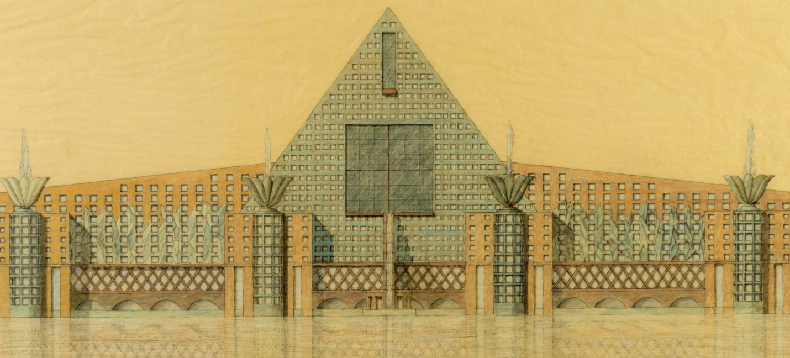
Aldo Rossi’s San Cataldo Cemetery with its iconoclastic red-orange ossuary cube provides a more idiomatic example of postmodern classical reference (Rossi, 1981). Rossi does not interpret classical form superficially; rather, he reconstituted the typological, civic, commemorative, and social relations associated with the cemetery and death through an abstract modern vocabulary (Rossi, 1966/1982, 1981). Rossi’s work goes back to the broader condition of postmodern design: premodern meanings were deconstructed into their constitutive elements and relations, then refined through the amplified process initiated by modernism.
The Modern Gesamtkunstwerk
Modernism’s abstraction, embrace of industrial techniques, and reduction of form served as an initial framework for postmodernism, which in turn gradually heightened the resolution of modernist ideas both materially and theoretically. By increased resolution, it is meant that postmodernism increased the number of independently legible surfaces, materials, signs, references, and geometric relationships available within modernism’s inherited framework. Postmodern design increased the resolution of modernism’s inherited framework across several dimensions: formally, through more shapes, surfaces, intersections, and independently legible components; materially, through expanded uses of colour, texture, and industrial materials; productively, through new fabrication and production techniques; and semantically, through juxtaposition, contradiction, quotation, and theoretical reference (Metropolitan Museum of Art, 2004; Venturi, 1966/2019; Victoria and Albert Museum, 2023).
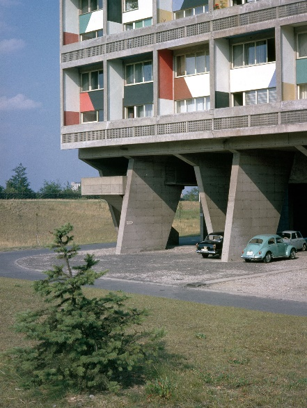
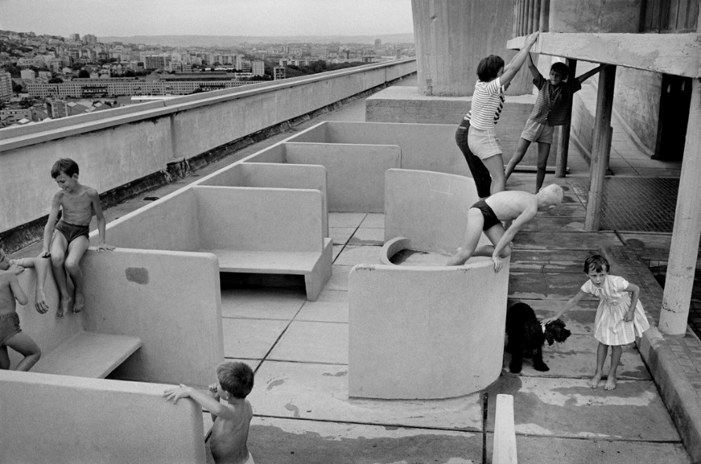
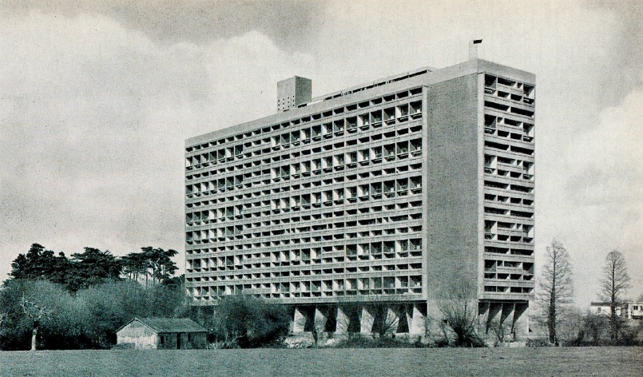
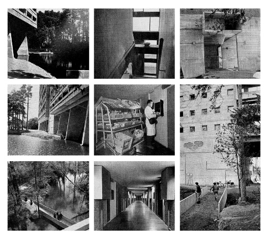
While modernist objects and buildings could be, and often were, internally complex, such as Le Corbusier’s Unité d’Habitation concept or Mies van der Rohe and Lilly Reich’s Barcelona Pavilion, their complexity was generally integrated into a controlled whole, or rather subordinated under the logic of the whole. The Unité incorporated housing, circulation, communal facilities, interior streets, and a roof terrace within a single monumental residential system (Fondation Le Corbusier, n.d.).
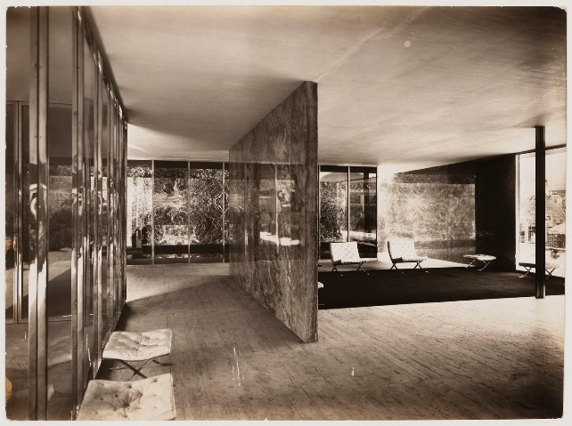
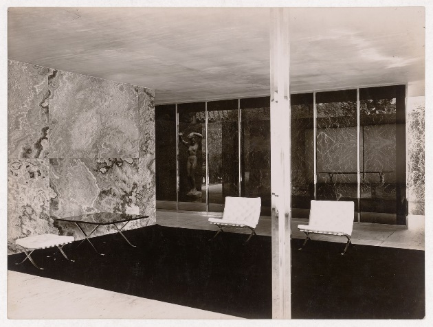
The Barcelona Pavilion created a sophisticated spatial sequence through freestanding planes, reflections, luxurious materials, and an open plan contained within an exceedingly disciplined formal order, a formalized method of integrating the constituent parts of an architectural project that would later carry through to other Miesian works, including the Seagram Building, the Toronto-Dominion Centre, and the Illinois Institute of Technology campus (Mertins, 2014; Neumann, 2020).
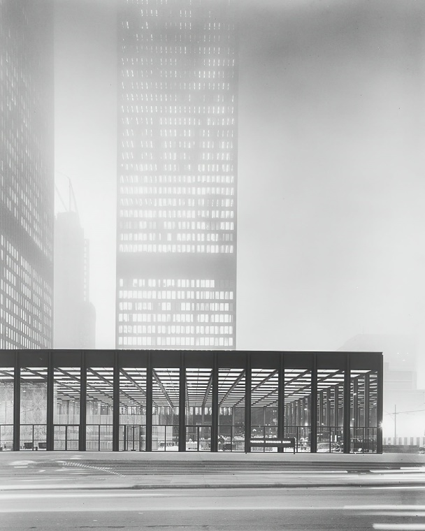
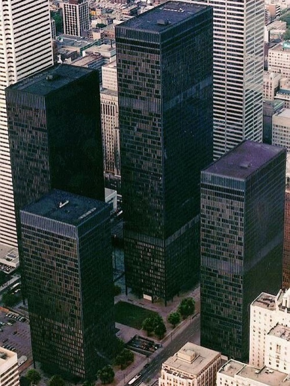
Modernism’s subordination of objects, functions, individual systems, and formal qualities to the unified logic of the whole can also plainly be seen in projects and objects such as Eileen Gray’s E.1027 adjustable side table, Arne Jacobsen’s SAS Royal Hotel, and Alvar Aalto’s Paimio Sanatorium. The E.1027 table in particular represents a singular element within a complete project logic. Gray designed the site, building, spatial arrangement, hardware, fixed and loose furniture, lamps, textiles, and colour scheme as interdependent components of the same environment (O’Neil Ford Monograph Series, 2018). The table’s form, adjustment mechanism, material, and use were therefore sublimated to the whole of the wider architectural programme of E.1027.
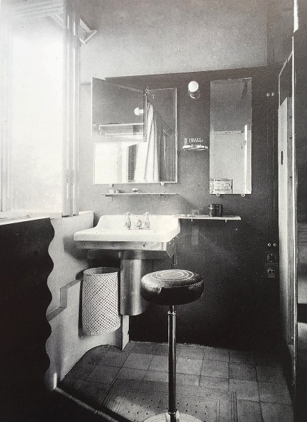
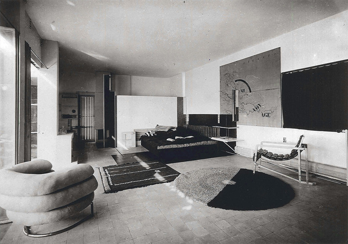
Jacobsen’s SAS Royal Hotel extended the same principle across the scale of a complete commercial interior. Often cited as an exemplary project in Jacobsen’s design career, it was a Gesamtkunstwerk encompassing all the constituent elements of a hotel. Architecture, furniture, lighting, textiles, fittings, utensils, and door handles were developed as a fully planned design, not independent or curated readymade objects sourced elsewhere (Sheridan, 2011). At Paimio Sanatorium, Aalto similarly coordinated architecture, furniture, lighting, colour, ventilation, acoustics, and medical functions within a unified environmental system designed around the patient’s experience (Laaksonen, 2015).
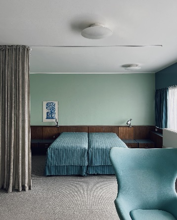


Modernism’s unifying systematic logic, its subordination of the many under the one true or pure vision of a project regardless of scale, relates back to the proto-modern concept of the Gesamtkunstwerk, or total work of art. Emerging from Romanticism and later receiving its most influential early formulation through Wagner, the Gesamtkunstwerk was an attempt to unite multiple artistic forms and media within a singular, all-encompassing work (Finger & Follett, 2011; Imhoof et al., 2016). However, as seen in the examples above, modernism adapted this idea toward its own ends. Unity in modernism was developed through coordinated formal, functional, productive, and spatial systems.
Modernism, characterized by formalized systems governing constituent elements, is evident in many early 20th-century art movements. Suprematism, De Stijl, Constructivism, and the Bauhaus can be understood as complementary, albeit overlapping and often contradictory, strands of the unifying logic that would become characteristic of modernism.
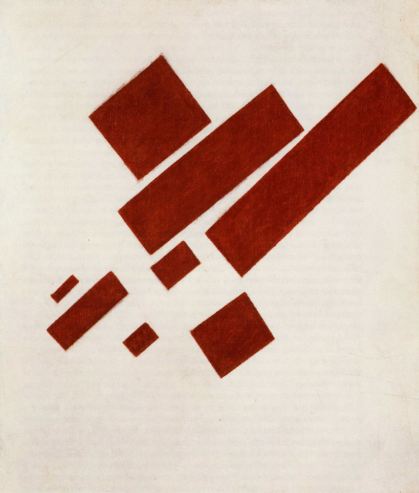
Suprematism subordinated pictorial representation to the supremacy of pure artistic feeling, elementary geometry, and the internal organization of the work, establishing a ruleset and demonstrating the principle that art could be governed by a restricted formal system rather than by naturalistic depiction (Drutt, 2003; Malevich, 1915/1968).
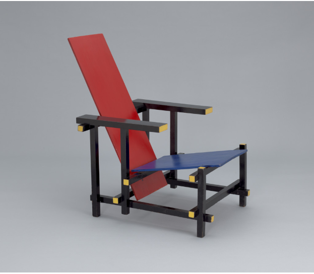
De Stijl established a further example of restricted formal language across multiple artistic and design media, demonstrating their unification through a systematized logic applied to both art and design. Painting, typography, furniture, and architecture were all subject to its overarching organization (Museum of Modern Art, 1982; Overy, 1991).
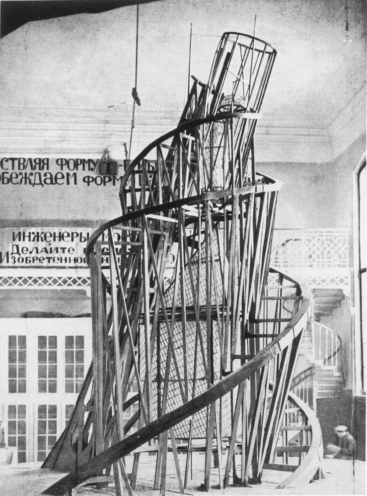
Constructivism redirected abstraction toward production and social function, recasting the artist as a producer, often within the Marxist and Bolshevik revolutionary context of the early Soviet Union, and applying formal systems to utilitarian objects, publications, architecture, exhibitions, and mass communication. Through artists such as Vladimir Tatlin, Alexander Rodchenko, Varvara Stepanova, and Liubov Popova, Constructivism became closely involved with revolutionary institutions, state commissions, propaganda, and the attempted material organization of Soviet life (Gan, 1922/2013; Lodder, 1983), becoming a de facto state style.
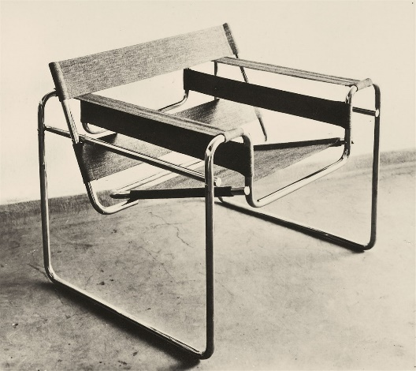
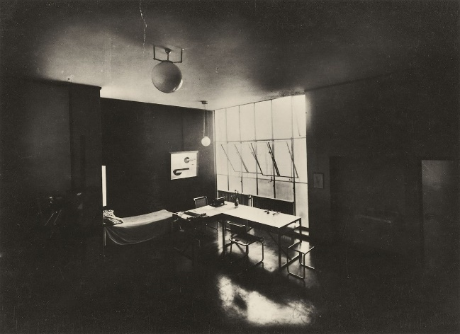
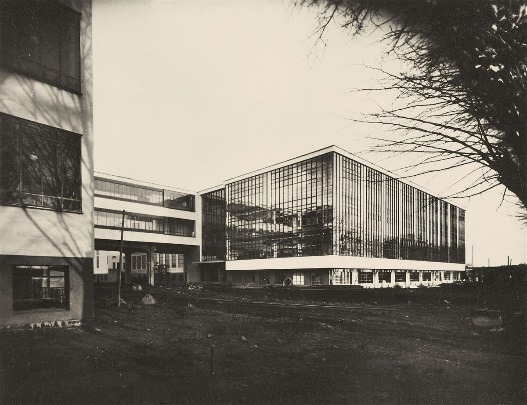
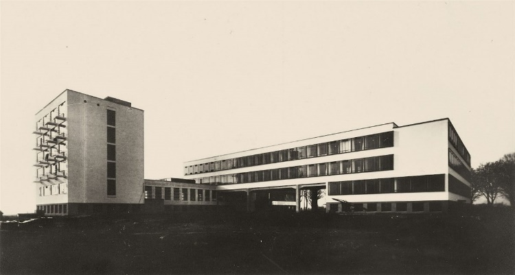
The institutionalization of modernism, and the merging of modernist ideals and the state, were more fully formalized through the Bauhaus. The Staatliches Bauhaus was a publicly funded educational institution—though its relationship with the state was unstable and support was inconsistent—built around a formalized regime and curriculum that attempted to reunite art, craft, architecture, and industrial production. This approach was later inherited and substantially revised by the Hochschule für Gestaltung Ulm, whose early curriculum drew directly upon Bauhaus pedagogical ideas before developing a more scientific, theoretical, and industrial model of design education (Hochschule für Gestaltung Ulm, 1958; Lindinger, 1991). Walter Gropius described the Bauhaus’s distant aim as the unified work of art in which architecture, sculpture, painting, and craft would be reunited, while the school increasingly connected that synthesis to standardization, functional organization, industrial production, and daily life (Droste, 2006; Gropius, 1919/1974; Wingler, 1969). This demonstrates the Bauhaus as an early institutional expression of the modernist tendency toward ‘total’ or comprehensive coordination of a project’s constituent elements, a tendency exemplified by the modernist Gesamtkunstwerk.
Projects such as E.1027, the SAS Royal Hotel, and Paimio Sanatorium demonstrate how the modernist Gesamtkunstwerk subordinated numerous objects, materials, and practical functions to an overarching project logic that was characteristic of modernism itself. The individual component remained legible and usable, but its form was justified through its relationship to the complete environment (Laaksonen, 2015; O’Neil Ford Monograph Series, 2018; Sheridan, 2011).
Semiotic Recombination
Meanwhile, in postmodernism, these components are more freely allowed to separate, collide, contradict one another, or carry several meanings at once in a way that was a reaction to, against, and extension of modernism. This can be called semiotic recombination, the process by which signs, references, functions, and the otherwise recognizable formal elements are separated from the original contexts and recombined within a new object, image, or structure, allowing several meanings and associations to operate at once—to overlap, vary, and multiply. The strict system of modernism is thereby subverted and exploited from a new departure point and oriented toward exhausting the possibilities of modernism. This is not the rejection of formalized systems, rulesets, constraints, and so on, but the reconfiguration of modernism’s existing rulesets taken as close to a conclusion as possible.
The process of semiotic recombination, which necessarily includes both deconstruction and refinement, can be demonstrated through a ten-image comparative series of pictorial or objectual depictions of cows that shows, through historically dispersed examples, this shared formal tendency.
In the above example set, the cow is introduced through Aelbert Cuyp’s Cows and Herdsman by a River, a premodern pastoral scene that embeds the cow within a familiar atmosphere, anatomy, function, and narrative. The cow is read as a complete animal in a complete environment, reflecting and signifying a real scene through a pictorial description of realistic naturalism (Wheelock, 2001).
In Charles Turner’s The Yorkshire Rose, the landscape recedes, and the viewer’s gaze is reset upon a partially abstracted but still naturalistically depicted cow. The body’s anatomical form is exaggerated into a large rectangular form, while the rest of the image remains firmly rooted in naturalistic depiction (Bonhams, 2012).
Arthur Dove’s Cow advances this abstraction by depicting a cow as a mass of compressed bodily signals, overlapping curves, and tonal masses comprising an ambiguous spatial relationship. The cow is still recognizable as such but no longer utilizes naturalistic depiction for recognition. The “cow-ness” is instead communicated through heavily abstracted size, scale, pattern, colour, and shape (Haskell, 1974; Metropolitan Museum of Art, n.d.).
The fourth and fifth images come from Picasso’s series Le Taureau, a series of lithographs produced through Picasso’s experimentation at Fernand Mourlot’s print workshop (Museum of Modern Art, 2010). The fourth image is an intermediate state in which the basic form of the bull, a male cow, has been reorganized into an internal geometric system making up the internal divisions and structural relationships of a cow. Despite this highly abstracted state, the basic form, anatomy, and legibility of a cow remain present. The fifth image contains the final reduced state of the bull. A body consisting of fewer than a dozen lines is nevertheless still perfectly comprehensible as a bull. All non-essential features are stripped away, leaving the most basic spatial relationships of a cow (Museum of Modern Art, 2010; Penrose, 1958).
In Composition VIII (The Cow) by Theo van Doesburg, the cow has been fully subordinated to van Doesburg’s modernist system. The cow is recognizable to us as a spatially arranged set of rectangles relying on proportion, rhythm, and colour to remain legible to the viewer (Museum of Modern Art, 1982; Overy, 1991).
Roy Lichtenstein’s Cow Going Abstract references Picasso’s Le Taureau, included previously as an example. It playfully reintroduces this modernist reference while utilizing the vernacular of Pop Art and comic books, signatures of Lichtenstein’s work, to reimagine the cow in increasing states of deconstruction and abstraction (Alloway, 1983; Roy Lichtenstein Foundation, n.d.).
Andy Warhol’s Cow references existing premodern art themes such as pastoralism and agrarian imagery to create a Pop Art screenprint that he would revisit throughout his career. The work subverts high art by transposing the image into a mass-produced decorative surface and simultaneously subverts the typical pastoral image by transforming it into graphic wallpaper. The image of the cow becomes recognizable through the surface texture, repetition, colour, and treatment of the final screenprints (Museum of Modern Art, n.d.; Warhol & Hackett, 1980).
François-Xavier Lalanne’s Vache Paysage, or “cow landscape”, produces a cow as a design object and sculpture with a flat top resembling a console or table. An empty rectangular frame takes the place of a complete body, allowing the viewer to see through the cow and have it frame the landscape in a humorous reversal of typical pastoral imagery, wherein cows are a complement to the landscape rather than a frame through which to focus the viewer’s gaze (Sotheby’s, 2023).
Michele De Lucchi’s Continental side table, designed for Memphis Milano in 1984, is the final refinement of the cow as an ideal postmodern object in the comparative series. The table is made from wood covered in decorative laminate and is constructed through the intersection of several independently segmented geometric planes. In Continental, regardless of the creator’s conscious intention, the cow has been reduced to one of its simplest and most recognizable signifiers: its black-and-white hide pattern. The four anatomical legs are compressed into two broad geometric supports, while the animal’s body is transformed into a collection of intersecting planar surfaces. The table does not look literally like a cow, but its pattern, structure, horizontal mass, and supports preserve enough information for the association to remain legible (Radice, 1984).
Across the above sequence, the cow is progressively separated from the premodern naturalistic, anatomical, and environmental completeness of pictorial representations. At the modernist centre of the sequence, abstraction reduces the cow by isolating and refining the minimum formal relationships required for its continued legibility. Postmodernism begins from these assumptions and reduced relationships, but instead of continuing to reduce information, it separates the cow’s constituent elements, including body, pattern, scale, surface, support, function, and cultural reference, and recombines, reconfigures, and remakes them within new material, functional, commercial, and art-historical systems. The resulting object contains less naturalistic information than the original cow while sustaining a greater number of independently legible formal and semantic relationships. This process can be described as complex reduction.
Complex Reduction
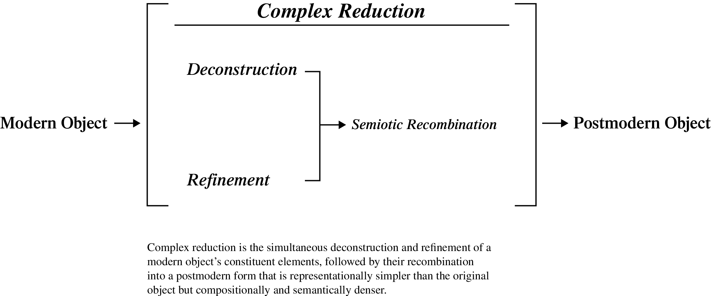
Complex reduction names the process through which deconstruction, refinement, and semiotic recombination produce the postmodern object. As objects retain traces of the processes through which they are produced, so too does the resulting postmodern object. Its materials, surfaces, references, functions, and geometric relations preserve evidence of the operations through which it was separated, developed, and recombined.
Representational images may become simpler than the original naturalistic form. The cow, for example, is reduced in form and detail to only its most essential and limited set of recognizable characteristics. This constitutes the first movement from premodern naturalistic depiction toward modernist abstraction. The object may then become more complex through the semiotic recombination of these essential and limited characteristics, especially when combined with multiple meanings and associations. Taken together, these operations create an object, image, or structure more complex than a strict modernist interpretation would permit, while still using the logic and visual language of modernism (Baudrillard, 1968/1996; Jencks, 1991; Venturi, 1966/2019).
This reduction can be understood as a loss of visual granularity from the premodern original. Individual anatomical details are reduced to silhouette, volume, geometric spatial arrangement, pattern, material, gesture, and so on. The cow becomes less particular and more abstract. It is no longer primarily a detailed biological body. It is increasingly understood as an abstracted mass containing the signifiers and “cow-ness” of a cow (Heidegger, 1950/1971; Venturi, 1966/2019).
The crux of complex reduction is that, while the representational image may become simpler, its meanings and associations become more numerous and complex, exceeding the strict functional and formal limits associated with modernism. The object is no longer defined only by its practical function or literal form but by its place within a broader system of material, cultural, social, and symbolic relations (Baudrillard, 1968/1996; Jencks, 1991).
This increase in meaning occurs through semiotic recombination. The cow is conceptually deconstructed into a series of culturally and formally recognizable signs: four legs, a horizontal body, bodily mass, a basic silhouette, and a black-and-white hide pattern. These signs are not a list or objective inventory of properties that constitute a cow. Adapting Heidegger’s account of thingness to the present visual analysis, the cow’s cow-ness (shorthand for its thingness) lies in the world of relations that these elements gather. A thing comes into existence as such through relational gathering instead of purely through its formally detachable qualities (Heidegger, 1967) or through objectivity alone (Heidegger, 1950/1971). In the case of the cow, these relations include pastoral representation, agriculture, domestication, food, its hide, childhood imagery, popular culture, and the accumulated history of cattle imagery. This is how an anatomically incorrect child’s drawing may still be recognized as a cow. The drawing is not an accurate depiction of the object, but it gathers enough of the relations constitutive of cow-ness for a legible image to appear.
Through semiotic recombination, all of the cow’s existing associations become available to the depiction: an animal, a tool, a pattern, and a set of anatomical relations, but also a structure, a piece of furniture, a landscape, a joke, a reference, an idiom, or a conceit. Complex reduction produces low representational granularity but high compositional and semantic density and is therefore an essential constitutive, albeit not extensionally universal, aspect of postmodern design.
Postmodern design detaches these signs from their original ecology and recombines them as a new object, allowing the represented form to become simpler while its cultural and semantic meanings multiply.
Cow Architecture
What is a cow architecturally? A cow already has several qualities associated with domestic furniture, specifically either a table or a chair. Cows have four legs and a long horizontal body; you can sit on a cow or place objects on its back with relative ease. Were it not for the fact that it is a living, breathing animal, it could make a serviceable chair or table. Therefore, the relationship between cow and table is not completely arbitrary. It is based on an existing formal and functional analogy. The immediate reaction upon seeing Continental is something like, “Oh, it’s a cow,” but how does this happen? And how did we arrive at this recognition through a specifically postmodern process (Radice, 1984)?
The cow in the above ten representations has therefore undergone both deconstruction and refinement, culminating in semiotic recombination. Formally, it has been deconstructed into body, legs, skin, pattern, support, and surface. Semantically, it has been deconstructed through its meanings, relations, symbolism, and cultural representations. In turn, these aspects of the cow have been refined toward an idealized “cow state” according to the formal strictures of postmodern design and furniture: industrial laminate, abstract geometry, vivid colour, intersecting planes, visible surface treatment, and a deliberately reconstructed relationship between form and decoration (Jencks, 1991; Radice, 1984).
This is an acute example of complex reduction. The cow becomes representationally simpler while the composition becomes more complex in a logically congruent and constrained way. The new complexity is based on the framework produced by the original reduction. Because the cow has already been understood as a black-and-white biomorphic pattern, a broad horizontal form, and a body supported by four legs arranged into two matched pairs, those four legs can be recombined into two broad structural supports without eliminating the paired supporting relationship through which the cow remains legible. That reduced framework can then be fractured, rotated, multiplied, resurfaced, and recombined while retaining its underlying referent and associations (Baudrillard, 1968/1996; Jencks, 1991).
The Rectangle Becoming a Polygon
Note. The rectangle becoming a polygon is a visual shorthand, not a diagnostic or totalizing theory of postmodernism. In other examples, this increase can be seen in surface, colour, material, quotation, function, or symbolism rather than through a literal increase in the number or complexity of vertices.
The movement from modernism to postmodernism can be summarized as the shift from a rectangle to a polygon. If the modernist object is geometric, reduced to its basic essential elements, the postmodern parallel increases the number of visible vertices, angles, surfaces, patterns, materials, and intersections. Working from the starting point of a modernism-reduced framework, it increases the object’s granularity (Jencks, 1991).
This shift was also conditioned by changes in the technological environment. Technology does not simply provide artists and designers with a neutral set of tools. It changes the scale, pace, and pattern through which cultural forms can be produced (McLuhan, 1964). New methods of digital drawing, modelling, engineering, and fabrication restructured the field of formal possibility, making increasingly complex three-dimensional forms easier to imagine, revise, calculate, and construct. These technologies did not create postmodernism’s tendency toward fragmentation, multiplicity, contradiction, or excess. They opened new possibilities that artists and designers then exploited in relatively predictable ways, according to tendencies already present within modernist culture (Carpo, 2011; Lynn, 1999).
The fluid geometries of Zaha Hadid, the compound surfaces of Oakley sunglasses, and Y2K’s characteristic ‘blobiness’ can be seen as possible endpoints of this tendency. These examples take the ideas seen in the cow and column beyond the scope of the present analysis, but they illustrate the same broader movement. Forms become progressively more complicated and overloaded without returning to traditional ornamentation. Complexity is instead produced through curvature, subdivision, intersecting surfaces, material variation, and the continuous manipulation of abstract geometry (Carpo, 2011; Lynn, 1999).
Therefore, postmodernist design does not merely reverse what modernism removed. It takes the results of that reduction as a departure point, taking apart its assumptions, ideas, and mechanisms, then accelerating, multiplying, and collapsing those elements into new forms. Through complex reduction, the represented subject becomes simpler than its naturalistic referent while becoming more compositionally and semantically complex than a strict modernist conception of that subject. The cow becomes less of a cow as a biological image, but more densely cow-like as a sign. The column does not return to a classical form, except through quotation; it becomes a complex polygon either through surface, meaning, or both. In postmodernism, the act of reduction becomes complex.
References
Alamy. (n.d.). The Seven Dwarfs stand as pillars and columns on the Team Building at the Walt Disney Studios in Burbank, California [Photograph; URL not recorded in source notes].
Alloway, L. (1983). Roy Lichtenstein. Abbeville Press.
Archidit [@archidit]. (n.d.). [Aerial photograph of Ludwig Mies van der Rohe’s Toronto-Dominion Centre, Toronto] [Instagram post]. Instagram. https://www.instagram.com/p/DQqmbT8jbMO/
Areas Vellas [@areasvellas]. (2019, June 9). [Detail photograph of Eileen Gray’s Brick Screen] [Instagram post]. Instagram. https://www.instagram.com/p/BygRNgrCker/
Arne Jacobsen Design. (n.d.). Cutlery. https://arnejacobsen.com/works/cutlery/
Artsy. (n.d.). Dan Friedman, Driade: A “Bagatelle” screen on wheels, 1987 [Web listing; URL not recorded in source notes].
Azuma, H. (2009). Otaku: Japan’s database animals (J. E. Abel & S. Kono, Trans.). University of Minnesota Press. (Original work published 2001)
Ballard, K. (1974, January 28). Courtyard of the Getty Villa in Pacific Palisades, Los Angeles [Photograph]. Los Angeles Times Photographic Archives, UCLA Library Special Collections. https://digital.library.ucla.edu/catalog/ark:/21198/zz0002psdf
Baudrillard, J. (1994). Simulacra and simulation (S. F. Glaser, Trans.). University of Michigan Press. (Original work published 1981)
Baudrillard, J. (1996). The system of objects (J. Benedict, Trans.). Verso. (Original work published 1968)
Baudrillard, J. (2010). America (C. Turner, Trans.). Verso. (Original work published 1986)
Bauen + Wohnen. (1957). Unité d’Habitation, Rezé [Photographs]. Bauen + Wohnen, 11.
Blake, P. (1961, September 15). Are you illiterate about modern architecture? Vogue. https://archive.vogue.com/article/1961/9/are-you-illiterate-about-modern-architecture
Bonhams. (2012). The Yorkshire Rose, after Thomas Weaver [Auction record; URL not recorded in source notes].
Burri, R. (1959). Children playing on the roof terrace of Le Corbusier’s Unité d’Habitation, Marseille [Photograph]. Magnum Photos.
Canadian Centre for Architecture. (n.d.-a). Interior view of the German Pavilion at the Barcelona International Exposition of 1929–1930 showing Barcelona chairs, Spain [Gelatin silver print, PH1985:0330]. https://www.cca.qc.ca/en/search/details/collection/object/361604
Canadian Centre for Architecture. (n.d.-b). Interior view of the German Pavilion at the Barcelona International Exposition of 1929–1930 showing furniture and a sculpture titled “Der Morgen” [Dawn] by Georg Kolbe, Spain [Gelatin silver print, PH1985:0329]. https://www.cca.qc.ca/en/search/details/collection/object/361603
Carpo, M. (2011). The alphabet and the algorithm. MIT Press.
Derrida, J. (2016). Of grammatology (G. C. Spivak, Trans.). Johns Hopkins University Press. (Original work published 1967)
Design of Day [@design_of_day]. (2020, January 28). [Photograph of Eileen Gray’s Brick Screen, sourced from Phillips] [Instagram post]. Instagram. https://www.instagram.com/p/B73SUyFo4c2/
DNP Foundation for Cultural Promotion. (2019). Art Direction Japan 2019 exhibition [Exhibition poster]. Ginza Graphic Gallery. https://www.dnpfcp.jp/gallery/ggg/eng/00000741
Droste, M. (2006). Bauhaus, 1919–1933: Reform and avant-garde. Taschen.
Drutt, M. (Ed.). (2003). Kazimir Malevich: Suprematism. Solomon R. Guggenheim Museum.
Finger, A. K., & Follett, D. (Eds.). (2011). The aesthetics of the total artwork: On borders and fragments. Johns Hopkins University Press.
Fondation Le Corbusier. (n.d.-a). Le Corbusier, Unité d’Habitation, Berlin, Germany, 1955–1958 [Web record; URL not recorded in source notes].
Fondation Le Corbusier. (n.d.-b). Le Corbusier, Unité d’habitation, Firminy, France, 1959–1968. https://www.fondationlecorbusier.fr/en/work-architecture/achievements-unite-dhabitation-firminy-france-1959-1968/
Fondation Le Corbusier. (n.d.-c). Le Corbusier, Unité d’Habitation, Rezé, France, 1949–1955 [Web record; URL not recorded in source notes].
Foucault, M. (1986). Of other spaces (J. Miskowiec, Trans.). Diacritics, 16(1), 22–27. (Original lecture delivered 1967)
Galerie. (2025). In a new exhibition, Dan Friedman’s radical spirit comes into focus [Article; URL not recorded in source notes]. Photograph by Tim Street-Porter.
Gan, A. (2013). Constructivism (C. Lodder, Trans.). Editorial Tenov. (Original work published 1922)
González Jiménez, B. S., & Ruiz Colmenar, A. (2022). Eileen Gray’s photography: An architectural journey through E.1027. ZARCH: Journal of Interdisciplinary Studies in Architecture and Urbanism, 18, 178–193. https://doi.org/10.26754/ojs_zarch/zarch.2022186170
Gordon, E. (1953, April). The threat to the next America. House Beautiful.
Gray, E., & Badovici, J. (1929). E.1027: Maison en bord de mer. L’Architecture Vivante.
Gropius, W. (1937). The new architecture and the Bauhaus (P. M. Shand, Trans.). Museum of Modern Art.
Gropius, W. (1974). Programme of the Staatliches Bauhaus in Weimar. In H. M. Wingler, The Bauhaus: Weimar, Dessau, Berlin, Chicago (W. Jabs & B. Gilbert, Trans., pp. 31–33). MIT Press. (Original work published 1919)
Haskell, B. (1974). Arthur Dove. San Francisco Museum of Art.
Heidegger, M. (1967). What is a thing? (W. B. Barton Jr. & V. Deutsch, Trans.). Henry Regnery Company.
Heidegger, M. (1971). The thing. In Poetry, language, thought (A. Hofstadter, Trans., pp. 163–186). Harper & Row. (Original work published 1950)
Hochschule für Gestaltung Ulm. (1958). Ulm: Quarterly bulletin of the Hochschule für Gestaltung, Ulm (No. 1).
Imhoof, D., Menninger, M. E., & Steinhoff, A. J. (Eds.). (2016). The total work of art: Foundations, articulations, inspirations. Berghahn Books.
Jencks, C. (1991). The language of post-modern architecture (6th ed.). Academy Editions.
Johnson, P., & Wigley, M. (1988). Deconstructivist architecture. Museum of Modern Art.
Korab, B. (1973). Toronto-Dominion Center, Toronto, Canada [Photograph]. Balthazar Korab Collection, Library of Congress Prints and Photographs Division.
Laaksonen, E. (Ed.). (2015). Alvar Aalto architect: Paimio Sanatorium, 1929–33. Rakennustieto.
Langendorf, R. (1962). Le Corbusier’s Unité d’Habitation, Berlin [Photograph; original collection, publication, and repository not identified in source notes].
Le Corbusier. (2007). Toward an architecture (J. Goodman, Trans.). Getty Research Institute. (Original work published 1923)
Lindinger, H. (Ed.). (1991). Ulm design: The morality of objects, Hochschule für Gestaltung Ulm, 1953–1968 (D. Britt, Trans.). MIT Press.
Lodder, C. (1983). Russian constructivism. Yale University Press.
The London List [@the_london_list]. (2024, January 26). [Photograph of Eileen Gray’s Brick Screen in the Paris home of M. and Mme Robert Walker] [Instagram post]. Instagram. https://www.instagram.com/p/C2jkA7dIqQr/
Loos, A. (1998). Ornament and crime. In A. Opel (Ed.), Ornament and crime: Selected essays (M. Mitchell, Trans.). Ariadne Press. (Original work published 1908)
Lynn, G. (1999). Animate form. Princeton Architectural Press.
MacCarthy, F. (2019). Gropius: The man who built the Bauhaus. Belknap Press of Harvard University Press.
Malevich, K. (1968). From Cubism and Futurism to Suprematism: The new painterly realism. In T. Andersen (Ed.), K. S. Malevich: Essays on art, 1915–1933 (X. Glowacki-Prus & A. McMillin, Trans., Vol. 1, pp. 19–41). Rapp & Whiting. (Original work published 1915)
McLuhan, M. (1964). Understanding media: The extensions of man. McGraw-Hill.
Mertins, D. (2014). Mies. Phaidon Press.
Metropolitan Museum of Art. (2004). Design, 1975–2000. https://www.metmuseum.org/essays/design-1975-present
Metropolitan Museum of Art. (n.d.). Arthur Dove: Cow [Collection record; URL not recorded in source notes].
Michael Graves Architecture & Design. (1991). Team Disney Building, Burbank, California [Project record; URL not recorded in source notes].
Michael Graves Architecture & Design. (n.d.). Walt Disney World Dolphin & Swan Hotels. https://michaelgraves.com/legacy-project/walt-disney-world-dolphin-swan-hotels/
Moholy-Nagy, L. (1947). The new vision, 1928: Fourth revised edition, 1947, and abstract of an artist (D. M. Hoffmann, Trans., 4th rev. ed.). Wittenborn. (Original work published 1928)
Mumford, L. (1947, October 11). Status quo. The New Yorker. https://www.newyorker.com/magazine/1947/10/11/the-sky-line-3
Museum of Modern Art. (1982). De Stijl, 1917–1931: Visions of utopia. Museum of Modern Art.
Museum of Modern Art. (2004). Ludwig Mies van der Rohe, Farnsworth House, Plano, Illinois, elevation. In MoMA highlights. https://www.moma.org/collection/works/784
Museum of Modern Art. (2010). Picasso: Variations and themes. Museum of Modern Art.
Museum of Modern Art. (2012). Vladimir Tatlin: Model for Pamiatnik III Internatsionala (Monument to the Third International), 1920 [Archival photograph]. In Inventing abstraction, 1910–1925. https://www.moma.org/interactives/exhibitions/2012/inventingabstraction/?work=226
Museum of Modern Art. (n.d.). Andy Warhol: Cow, 1966 [Collection record; URL not recorded in source notes].
Museum of Modern Art. (n.d.). Gerrit Rietveld: Red Blue Chair, 1918–1923 [Chair]. https://www.moma.org/collection/works/4044
Museum of Modern Art. (n.d.). Ludwig Mies van der Rohe, Philip Johnson, Kahn & Jacobs: Seagram Building, New York City, New York. https://www.moma.org/collection/works/171452
Neumann, D. (Ed.). (2020). The Barcelona Pavilion by Mies van der Rohe: One hundred texts since 1929. Birkhäuser.
Nichols, K., Burke, P., & Hancock, C. (Eds.). (1990). Michael Graves: Buildings and projects, 1982–1989. Princeton Architectural Press.
No Retrospective [@noretrospective]. (n.d.). [Photograph of a black lacquered three-panel folding screen] [Instagram post]. Instagram. https://www.instagram.com/p/DYZ19w4AS_J/
Obsolete Inc. [@obsoleteinc]. (n.d.). [Photograph of a polychrome floral folding screen] [Instagram post]. Instagram. https://www.instagram.com/p/DafBKXzjbCm/
Ouroussoff, N. (2011, March 27). [Article featuring the Getty Villa atrium]. The New York Times. https://www.nytimes.com/2011/03/27/weekinreview/27ouroussof.html
Overy, P. (1991). De Stijl. Thames & Hudson.
O’Neil Ford Monograph Series. (2018). E.1027, Eileen Gray. University of Texas at Austin School of Architecture.
Pamono. (n.d.). Antique French gilded wood three-panel room divider, 1890s. https://www.pamono.com/antique-french-gilded-wood-three-panel-room-divider-1890s
Penrose, R. (1958). Picasso: His life and work. Victor Gollancz.
Petschek, E. (n.d.). [Photographs of Room 606 in Arne Jacobsen’s SAS Royal Hotel] [Instagram photographs]. Instagram. https://www.instagram.com/p/CfTU3Pfuzhd/
Phillips. (n.d.). Eileen Gray: Unique “Brick” screen [Auction record; URL not recorded in source notes].
Radice, B. (1984). Memphis: Research, experiences, results, failures and successes of new design. Rizzoli.
Rams, D. (1995). Ten principles for good design. In Less but better. Jo Klatt Design + Design Verlag.
Rossi, A. (1981). A scientific autobiography. MIT Press.
Rossi, A. (1982). The architecture of the city (D. Ghirardo & J. Ockman, Trans.). MIT Press. (Original work published 1966)
Roy Lichtenstein Foundation. (n.d.). Cow Triptych (Cow Going Abstract). In Roy Lichtenstein: A catalogue raisonné [URL not recorded in source notes].
Seeger, P. (1963). Little boxes [Song]. On Broadside ballads, Vol. 2. Folkways Records.
Sheridan, M. (2011). Room 606: The SAS House and the work of Arne Jacobsen. Phaidon Press.
Sheridan, M. (2023). Room 606: The SAS House and the work of Arne Jacobsen. Strandberg Publishing.
Skallas, P. (2023, January 1). Refinement culture. The Lindy Newsletter. https://lindynewsletter.beehiiv.com/p/refinement-culture
Sorene, P. (2020, March 28). Photographs of Bauhaus in the 1920s. Flashbak. https://flashbak.com/photographs-of-bauhaus-in-the-1920s-426159/
Sotheby’s. (2023). François-Xavier Lalanne: Vache Paysage (Grand Modèle) [Auction record; URL not recorded in source notes].
Stedelijk Museum Amsterdam. (n.d.). Suprematist composition (with eight red rectangles) [Painting]. https://www.stedelijk.nl/en/collection/3133-kazimir-malevich-suprematistische-compositie-%28met-acht-rode-rechthoeken%29
Strüwing, A. (1960). SAS Royal Hotel, Copenhagen [Photograph]. Jørgen Strüwing Collection.
Taste Bologna. (2021, January 22). Aldo Rossi’s San Cataldo Cemetery in Modena: Guide & visit. https://www.tastebologna.net/blog/modena-cemetery
Tati, J. (Director). (1958). Mon oncle [Film]. Specta Films.
Tati, J. (Director). (1967). Playtime [Film]. Specta Films.
True, M., & Silvetti, J. (2006). The Getty Villa. J. Paul Getty Museum.
Venturi, R. (1966). Complexity and contradiction in architecture. Museum of Modern Art.
Venturi, R. (2019). Complexity and contradiction in architecture. Museum of Modern Art. (Original work published 1966)
Victoria and Albert Museum. (2023). What is postmodernism? https://www.vam.ac.uk/articles/what-is-postmodernism
Warhol, A., & Hackett, P. (1980). POPism: The Warhol ’60s. Harcourt Brace Jovanovich.
Wheelock, A. K., Jr. (2001). The public and the private in the age of Vermeer. Philip Wilson Publishers.
Wingler, H. M. (1969). The Bauhaus: Weimar, Dessau, Berlin, Chicago (W. Jabs & B. Gilbert, Trans.). MIT Press.
Wolfe, T. (1981). From Bauhaus to our house. Farrar, Straus and Giroux.